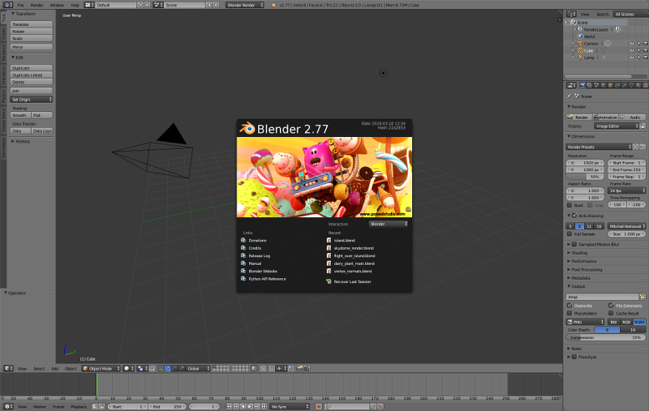

Установка и обновление¶
Содержание
Установка¶
Существуют две версии фреймворка Blend4Web: Blend4Web SDK и аддон Blend4Web. Какую из них вам следует выбрать для работы, зависит от того, приложения какого типа вы планируете разрабатывать.
Если вы планируете использовать все возможности движка Blend4Web, вам следует установить Blend4Web SDK.
Если же вы планируете разрабатывать небольшие проекты или собираетесь использовать только некоторые возможности движка Blend4Web (например, редактор нормалей), вы можете использовать аддон Blend4Web вместо SDK.
Обратите внимание, что аддон поддерживает экспорт сцены только в формат HTML и имеет ограниченные возможности. Например, в нём отсутствует менеджер проектов, примеры сцен, документация и другие дополнительные ресурсы. Тем не менее, аддон располагает всем необходимым для создания простого приложения.
Установка программы Blender¶
Создание 3D сцен осуществляется в графическом пакете Blender, который является программным продуктом с открытым исходным кодом и распространяется бесплатно.
Перед установкой необходимо загрузить и установить совместимую версию Blender, согласно таблице.
Должна использоваться текущая стабильная версия Blender. Загрузить Blender можно с официального сайта или с сайта Blend4Web.
{kind=link}
Установка Blend4Web SDK¶
Стабильные версии дистрибутива поставляются в виде архива (blend4web_ce_YY_MM.zip – бесплатный SDK, blend4web_pro_YY_MM.zip – коммерческий SDK). Достаточно распаковать данный архив в любое место на диске.
Открыть Blender.
Вызвать окно пользовательских настроек
File > User Preferences....Открыть вкладку
File.В поле
Scriptsпрописать путь к директории SDK.Нажать
Save User Settings
Перезапустить Blender.
Ещё раз вызвать окно пользовательских настроек
File > User Preferences....Открыть вкладку
Add-ons.Активировать аддон Blend4Web.
Ещё раз нажать
Save User Settings
Проверка:
В меню File > Export должны появиться опции Blend4Web (.json) и Blend4Web (.html).
Установка аддона Blend4Web¶

Устанавливается так же, как любой другой аддон Blender.
Открыть Blender.
Вызвать окно пользовательских настроек
File > User Preferences....Открыть вкладку
Add-ons.Нажать кнопку
Install From File....Выбрать архив, содержащий аддон Blend4Web, и нажать кнопку
Install From File....Нажмите кнопку
Save User Settings.Перезапустить Blender.
Ещё раз вызвать окно пользовательских настроек
File > User Preferences....Открыть вкладку
Add-ons.Найдите аддон Blend4Web в списке.
Активируйте его, поставив флажок слева от названия аддона.
Снова нажмите кнопку
Save User Settings.
Теперь всё должно работать.
Переключение в режим Blend4Web¶
Выберите профиль настроек Blend4Web в выпадающем меню верхней панели:

Обновление¶
Обновление SDK¶
Перед обновлением рекомендуется создать резервные копии всех разрабатываемых проектов с помощью средств экспорта.
При обновлении SDK следуйте этой инструкции:
Загрузите новую версию SDK.
Открыть Blender.
Откройте окно
User Preferences.Откройте вкладку
Add-ons.Деактивируйте аддон Blend4Web.
Примечание
Не рекомендуется использовать кнопку
Removeдля отключения аддона при обновлении SDK, так как это приведёт к полному удалению аддона, в том числе его файлов в SDK.Разархивируйте новую версию SDK.
Примечание
Обновление может производиться одним из двух способов.
Во-первых, вы можете полностью удалить каталог SDK, после чего распаковать каталог с новой версией и прописать путь к ней в настройках Blender, как если бы вы устанавливали SDK с нуля.
Во-вторых, вы можете просто перезаписать устаревшие файлы SDK новыми. Этот подход считается менее “чистым”, но в большинстве случаев не должен приводить к проблемам.
В окне
User Preferencesоткройте панельFile.В поле
Scriptsпропишите путь к директории SDK.Нажмите кнопку
Save User Settings.Перезапустить Blender.
Снова откройте окно
User Preferences.Откройте вкладку
Add-ons.Активируйте аддон Blend4Web.
Снова нажмите кнопку
Save User Settings.Проверьте, всё ли работает правильно.
После того, как обновление выполнено, сохранённые проекты можно импортировать с помощью средств импорта проектов.
Обновление аддона¶
В том случае, если вы используете только аддон Blend4Web, следуйте этой инструкции.
Перед установкой новой версии аддона рекомендуется удалить старую. Для этого раскройте информационную панель аддона Blend4Web и нажмите кнопку Remove. Удаление старой версии аддона перед установкой новой не обязательно, но рекомендуется для того, чтобы избежать возможных конфликтов.

Загрузите архив, содержащий новую версию аддона, и сохраните его в любом месте на жёстком диске.
Открыть Blender.
Откройте окно
User Preferences.Откройте панель
Add-ons.Установите новую версию аддона из загруженного архива.
Нажмите кнопку
Save User Settings.Перезапустить Blender.
Теперь всё должно работать.
Обновление сохранённых проектов¶
После обновления SDK (или аддона) вы можете импортировать в Менеджер проектов проекты, экспортированные перед началом обновления. Чтобы сделать это, следуйте инструкции:
Откройте Менеджер проектов.
Импортируйте проекты с помощью кнопки
Import Project(s).Повторно экспортируйте
.blend-файлы с помощью ссылкиre-export scenes.Проверьте импортированные проекты на отсутствующие и неиспользуемые модули с помощью ссылки
check modules. Если такие модули обнаружены, проблему можно попытаться исправить с помощью кнопкиUpdate Modules.Затем используйте команду
buildдля того, чтобы собранные версии импортированных проектов нормально работали с новой версией SDK.Если приложение использует тип привязки движка
CopyилиCompile, то его версию для разработки тоже необходимо собрать перед тем, как использовать с обновленным SDK (версии для разработки проектов с другими типами привязки движка должны нормально работать и без сборки).